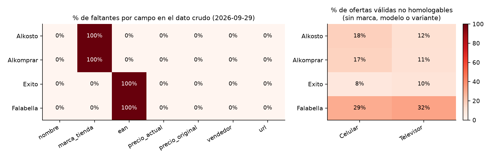
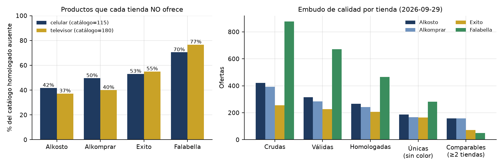
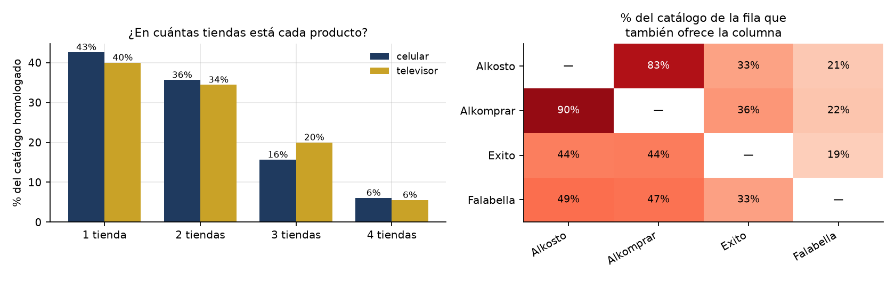
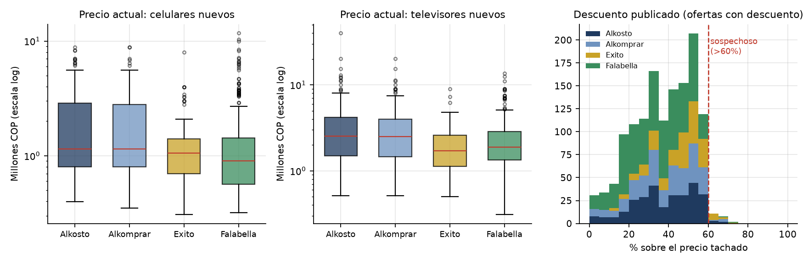
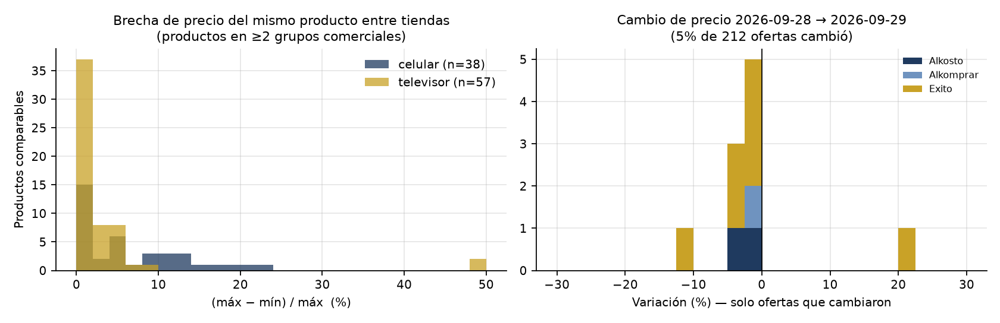
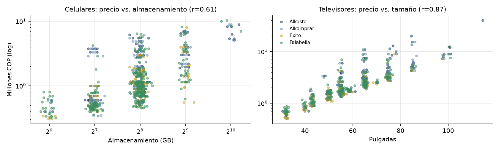

Resumen. Este informe da continuidad a la iniciativa presentada en la Entrega 1: comparar precios de celulares y televisores entre Alkosto, Alkomprar, Éxito y Falabella para que un consumidor sepa dónde comprar y cuánto puede ahorrar. Se construyó y ejecutó la primera versión del pipeline (extracción, homologación y carga histórica) y, con los 3.059 registros crudos obtenidos en dos extracciones (28 y 29 de septiembre de 2026), se presenta el análisis exploratorio, el diagnóstico de calidad bajo el modelo de las V's, su impacto sobre el problema y las transformaciones que se derivan de esa evidencia. El hallazgo central es que la dificultad del proyecto no está en obtener precios, sino en saber cuándo dos publicaciones son el mismo producto: no existe una llave común entre tiendas, el 21% de las ofertas válidas no se puede homologar y el 53% del catálogo no está disponible en una tienda dada.
La Entrega 1 planteó adquirir la información preferiblemente mediante APIs y usar la extracción web solo como mecanismo
complementario. Al revisar las cuatro tiendas se confirmó que ninguna expone una API pública de catálogo para terceros,
por lo que la adquisición se implementó simulando la búsqueda que haría un comprador (una consulta por categoría y marca,
primera página de resultados, pausas de 4 s entre peticiones y sin paralelismo). En Falabella los datos se leen del JSON
estructurado que la propia página incluye (__NEXT_DATA__), lo que se acerca al espíritu de "servicio
estructurado" previsto.
A diferencia de un proyecto que parte de un catálogo o datafeed entregado por un comercio, aquí el catálogo
se construye: el pipeline descubre qué productos ofrece cada tienda, los homologa en una clave común
(producto_id) y guarda una foto diaria. Ese catálogo canónico con histórico es la base del producto de datos
que se quiere desarrollar: un comparador consultable (en una etapa posterior, un asistente conversacional tipo
WhatsApp) al que el usuario le pregunte, por ejemplo, "iPhone 17 Pro de 256 GB" y reciba la tienda con el mejor
precio vigente, el ahorro frente a las demás y si la oferta es buena frente al histórico. Por eso los criterios de calidad
de este informe se evalúan pensando en una pregunta concreta: ¿la respuesta que daría el comparador sería correcta?
| Fuente | Plataforma / formato de lectura | Crudos 28-sep (celulares) | Crudos 29-sep (cel. + TV) | Identificadores publicados |
|---|---|---|---|---|
| Alkosto | HTML renderizado (SAP Hybris + Algolia) | 239 | 422 | EAN en la URL; sin campo de marca |
| Alkomprar | HTML renderizado (misma plataforma de Alkosto) | 212 | 393 | EAN en la URL; sin campo de marca |
| Éxito | HTML renderizado (VTEX FastStore) | 158 | 256 | Marca; sin EAN; marca de marketplace en la URL |
| Falabella | JSON embebido (__NEXT_DATA__, Next.js) | 503 | 876 | Marca y vendedor; sin EAN |
| Total | 18 búsquedas × 4 tiendas por día (10 marcas de celular, 8 de TV) | 1.112 | 1.947 | Unidad: producto + tienda + vendedor + fecha |
Cada registro crudo contiene: tienda, categoría, marca buscada, nombre publicado, marca publicada, URL, EAN (si existe),
precio tachado, precio actual y vendedor. Los crudos se conservan sin modificar en data/raw/ (un CSV por día) y
los datos transformados se cargan en SQLite (data/precios.db), separados para garantizar trazabilidad, tal
como se comprometió en la Entrega 1. La extracción del 28-sep incluyó solo celulares porque los televisores se integraron
al pipeline el 29-sep; ambas fechas se procesan con exactamente las mismas reglas de transformación.
Para medir la calidad en cada paso se definió un embudo con cinco estados: crudas (todo lo leído), válidas (se descartan accesorios, duplicados y precios fuera de rango), homologadas (se identificó marca, modelo y variante: almacenamiento en celulares y pulgadas en TV), únicas (se colapsan los colores de un mismo producto) y comparables (producto nuevo, vendido por la propia tienda y presente en al menos dos tiendas).
En el crudo del 29-sep el 14,3% de las celdas de los campos principales está vacío, pero ese faltante es totalmente estructural: no se debe a errores de lectura sino a que cada plataforma publica campos distintos (Figura 1, izquierda). Alkosto y Alkomprar publican el EAN pero no la marca; Éxito y Falabella publican la marca pero no el EAN. Precio, nombre, URL y vendedor están completos en el 100% de los casos. La consecuencia es decisiva para el diseño: no existe un identificador común a las cuatro tiendas, de modo que el emparejamiento no puede hacerse por EAN y debe hacerse por atributos extraídos del texto.

| Atributo derivado | Celulares (% faltante) | Televisores (% faltante) | Causa principal observada |
|---|---|---|---|
| Marca | 0,0% | 1,0% | Casi siempre está en el título o en el campo de marca. |
| Modelo | 18,6% | 20,0% | Títulos comerciales sin código ("Televisor 65 Pulgadas Smart TV 4K"), submarcas no previstas. |
| Variante (GB / pulgadas) | 3,1% | 2,3% | Títulos sin capacidad o con tamaño solo en el código. |
| No homologable (alguno de los tres) | 21,0% global · Falabella 29–32% · Alkosto/Alkomprar 11–18% · Éxito 8–10% | Estas ofertas no pueden participar en la comparación. | |
Un caso típico: Alkosto publica "TV SAMSUNG 65" 65U8000H 4K-UHD", Éxito "Televisor SAMSUNG 65 pulgadas …
UN65U8000HKXZL" y Falabella a veces solo "Televisor Samsung 65 Pulgadas 4K Mini LED 75H + BARRA". Las dos
primeras se homologan (código normalizado 65u8000h); la tercera no tiene código completo y además es un combo.
El segundo tipo de faltante, y el más relevante para el consumidor, es la ausencia del producto en una tienda. Sobre el catálogo homologado del 29-sep (115 celulares y 180 televisores nuevos vendidos por la propia tienda), el 52,8% de las combinaciones producto × tienda está vacío. Solo el 6% de los productos aparece en las cuatro tiendas y cerca del 40% aparece en una sola, por lo que no admite comparación.
| Categoría | Catálogo | Ausente en Alkosto | Ausente en Alkomprar | Ausente en Éxito | Ausente en Falabella | En 1 sola tienda |
|---|---|---|---|---|---|---|
| Celulares | 115 | 41,7% | 49,6% | 53,0% | 70,4% | 42,6% |
| Televisores | 180 | 37,2% | 40,0% | 55,0% | 76,7% | 40,0% |

Hay que diferenciar la ausencia real de la aparente. Parte de la ausencia en Falabella es aparente: el producto sí existe, pero lo vende un tercero (se excluye para comparar tienda contra tienda) o su título no trae el código. Parte es real: cada tienda tiene surtido propio. Por esto, la ausencia no se imputa: un precio inexistente no se rellena, se registra como "no disponible", porque para el comprador esa es información válida.

El 71% de los EAN publicados por Alkosto y Alkomprar coincide (291 de 408), y en el 100% de esos 291 productos comunes el precio es idéntico. Ambas tiendas pertenecen al mismo grupo comercial y comparten plataforma, catálogo y política de precios. De los 174 productos comparables del 29-sep, 79 (45%) solo están en Alkosto y Alkomprar, y todos tienen brecha de precio cero: son comparaciones aparentes que no le aportan información al comprador. Por eso las brechas de precio de este informe se calculan solo sobre productos presentes en al menos dos grupos comerciales (Alkosto/Alkomprar, Éxito y Falabella).
| Categoría | Tienda | n | Mediana (M COP) | Media (M COP) | Mín. (M COP) | Máx. (M COP) | Coef. variación |
|---|---|---|---|---|---|---|---|
| Celulares | Alkosto | 179 | 1,15 | 2,00 | 0,40 | 8,87 | 93% |
| Alkomprar | 163 | 1,15 | 1,88 | 0,35 | 8,87 | 91% | |
| Éxito | 124 | 1,06 | 1,24 | 0,31 | 8,00 | 79% | |
| Falabella | 368 | 0,90 | 1,40 | 0,32 | 11,72 | 112% | |
| Televisores | Alkosto | 126 | 2,52 | 3,85 | 0,51 | 40,00 | 119% |
| Alkomprar | 122 | 2,50 | 3,33 | 0,51 | 20,10 | 91% | |
| Éxito | 100 | 1,70 | 2,03 | 0,50 | 9,00 | 68% | |
| Falabella | 261 | 1,90 | 2,46 | 0,31 | 13,60 | 80% |
La media supera ampliamente a la mediana en todas las tiendas (asimetría a la derecha) y el coeficiente de variación está entre 68% y 119%: los precios abarcan desde gama de entrada hasta gama alta (un TV de 115" a 40 M COP). Comparar promedios entre tiendas sería engañoso porque cada una tiene una mezcla de surtido diferente: la mediana más baja de Éxito y Falabella refleja más productos económicos, no precios más bajos. La comparación válida es producto contra producto, lo que refuerza la necesidad de la homologación. Con la regla IQR dentro de cada marca se identifican 100 valores atípicos (7,0%); todos están por encima de la mediana de su marca y, al revisarlos, corresponden a modelos de gama alta legítimos (OLED de 77", Mini LED de 85–98", celulares de 512 GB), no a errores de lectura, por lo que no se eliminan.

Entre el 91% y el 97% de las ofertas de cada tienda muestra un precio tachado, con un descuento mediano del 39% en Alkosto/Alkomprar, 48% en Éxito y 34% en Falabella. Un descuento casi universal y de esa magnitud indica que el precio tachado funciona más como recurso comercial que como referencia real. Se marcaron como sospechosos los 18 descuentos superiores al 60% (1,2% de los productos nuevos), por ejemplo un Tecno Pova 6 de 256 GB en Éxito anunciado de $1.999.900 a $539.973 (−73%) o un Infinix Note 60 publicado en tres tiendas con prácticamente el mismo precio tachado (≈ $3,5 M) y un descuento del 67%. Para el comprador, "cuánto descuenta la tienda" no es una señal confiable; la señal útil es cuánto más barato está frente a las otras tiendas y frente a su propio histórico.
Entre los 95 productos comparables en al menos dos grupos comerciales, la brecha entre el precio máximo y el mínimo tiene mediana de 5,2% en celulares (25% de ellos supera el 10%) y de 0% en televisores, donde la mayoría de tiendas iguala precios pero aparecen casos extremos de hasta 49%. El ahorro mediano en celulares es de $65.000 y el máximo observado es de $1.539.890 (iPhone 17 Pro 256 GB: $4.899.010 en Alkosto/Alkomprar frente a $6.438.900 en Falabella). En el TCL 50S5K, Alkosto, Alkomprar y Éxito lo tienen en $1.189.900 mientras que Falabella, como vendedor propio, lo publica a su precio de lista de $2.299.900 (brecha de 48%). Ajustando por presencia, Alkosto/Alkomprar ofrecen el mínimo en el 71% de los celulares comparables en que están, Éxito en el 58% y Falabella en el 26%.

Con dos fechas el análisis temporal es todavía limitado, pero ya muestra dos patrones: (1) el surtido es estable (115 de 116 productos de celulares se repiten de un día a otro, índice de Jaccard 99,1%), lo que valida la clave de homologación en el tiempo; y (2) los precios cambian poco pero de forma abrupta: el 4,7% de las ofertas cambió en un día, con variaciones entre −10,4% y +22,0%. Estos saltos son precisamente los eventos que el histórico debe capturar para decir si una oferta es realmente buena.

A diferencia de proyectos basados en series numéricas homogéneas, en este problema la Variety y la Veracity son las dimensiones críticas, porque la misma realidad (un producto con un precio) llega descrita de formas distintas y con señales comerciales que no siempre son verídicas.
| V | Relevancia | Diagnóstico basado en evidencia |
|---|---|---|
| Variety | Muy relevante | Tres plataformas distintas (Hybris, VTEX, Next.js), dos formatos de lectura (HTML y JSON embebido)
y nomenclaturas diferentes para el mismo producto (65U8000H vs. UN65U8000HKXZL). Los identificadores
son complementarios (EAN solo en 2 tiendas, marca solo en las otras 2). El 21% de las ofertas válidas no se puede
homologar. Es la principal restricción técnica del proyecto. |
| Veracity | Muy relevante | Precio tachado presente en más del 91% de las ofertas, 18 descuentos > 60%; duplicados del 8–14% en Falabella, Alkosto y Alkomprar (la misma tarjeta aparece en varias búsquedas, p. ej. "televisor hisense" devuelve televisores TCL, o se repite en la misma página); mezcla de vendedores (84,5% marketplace en Falabella, 15,9% en Éxito), reacondicionados (hasta 6,1%) y combos TV + barra (7,9% de los televisores) que no son equivalentes al producto nuevo. Alkosto y Alkomprar duplican la misma observación de mercado (100% de precios iguales en EAN comunes). |
| Volume | Relevante | ≈1.950 ofertas crudas por día con ambas categorías, que se reducen a ≈440 filas comparables (174 productos). En seis semanas de corrida diaria se proyectan ≈80.000 registros crudos y ≈18.000 observaciones comparables, por encima de las 8.400 estimadas en la Entrega 1. El volumen es suficiente para el análisis; la limitación es que solo se lee la primera página de cada búsqueda (muestra, no censo) y que hoy hay solo dos fechas. |
| Variability | Relevante | El mismo producto varía hasta 49% entre tiendas; el 4,7% de las ofertas cambia de precio de un día a otro, con saltos de −10% a +22%; los descuentos cambian por campaña. La composición del surtido difiere entre tiendas, por lo que sus distribuciones de precio no son comparables de forma agregada. |
| Value | Relevante | Hay señal aprovechable: ahorro mediano de $65.000 en celulares y máximos de $1,1–1,5 M en un mismo producto. El valor para el consumidor depende de resolver Variety (más productos homologados) y Veracity (no confundir un descuento anunciado con un ahorro real). |
| Velocity | Media | Los precios cambian a escala de días, no de minutos: una corrida por lote diaria (≈30 min con pausas) es suficiente para el histórico. Para el futuro asistente conversacional bastará responder con la foto del día y, a pedido del usuario, refrescar solo el producto consultado; no se requiere procesamiento en streaming. |
Si los problemas identificados no se tratan, el comparador daría respuestas incorrectas justamente en las preguntas que el consumidor necesita resolver:
Cada transformación responde a un hallazgo de las secciones anteriores. Se indica cuáles ya están implementadas en el pipeline (Implementada) y cuáles se proponen para la siguiente etapa (Propuesta).
UN65U8000HKXZL → 65u8000h). Validado con 43 pruebas unitarias.
Implementadaproducto_id = categoría | marca | modelo | variante y colapso de colores
conservando el menor precio. Implementada Para el asistente se conservará además el
color como atributo consultable. Propuestadescuento_pct_valido, que excluye esos casos
de los promedios. Implementada Como indicador de oportunidad se usará el precio
frente al mínimo de las demás tiendas y frente al mínimo histórico propio, no el precio tachado.
Propuestarun_diario.bat listo) para acumular las seis semanas previstas.
PropuestaLa siguiente tabla hace explícita la cadena entre lo hallado, su efecto sobre el problema y la transformación que lo atiende.
| Hallazgo (EDA / calidad) | Impacto sobre el problema | Transformación asociada |
|---|---|---|
| EAN solo en 2 tiendas y marca solo en las otras 2 (14,3% de faltante estructural) | No hay llave común; el emparejamiento directo es imposible | Extracción de atributos y clave canónica producto_id |
Mismo TV con códigos distintos (65U8000H / UN65U8000HKXZL) | El mismo producto se trataría como dos productos distintos | Normalización del código de modelo (sin prefijo ni sufijo regional) |
| 21% de ofertas válidas no homologables (Falabella 29–32%) | Tiendas omitidas en la respuesta de "mejor precio" | Enriquecimiento con la ficha del producto y similitud de texto |
| 53% de ausencia producto × tienda; 40% de productos en una sola tienda | Imputar precios inventaría ofertas inexistentes | Disponibilidad explícita sin imputación; comparación solo con ≥ 2 tiendas |
| Alkosto y Alkomprar: 71% de EAN comunes y 100% de precios iguales | Comparaciones aparentes (45% de los comparables) con ahorro cero | Atributo de grupo comercial; indicadores entre grupos |
| Precio tachado en > 91% de las ofertas; 18 descuentos > 60% | Recomendar ofertas con descuentos ficticios | Marca de descuento sospechoso y oportunidad frente a otras tiendas e histórico |
| Marketplace (84,5% en Falabella), reacondicionados y combos TV + barra (7,9%) | Ahorros ficticios al comparar productos no equivalentes | Segmentación por condición, tipo de vendedor y combo |
| Duplicados del 8–14% en tres tiendas | Volumen y pesos por tienda inflados | Deduplicación por tienda + URL + precio |
| Precio correlacionado con GB (r = 0,61) y pulgadas (r = 0,87) | Sin la variante se compararían productos de precio muy distinto | Variante obligatoria en la clave (GB / pulgadas) |
| 4,7% de precios cambia en un día (−10% a +22%); surtido estable (99%) | Una foto única no permite juzgar si una oferta es buena | Carga histórica idempotente y corrida diaria programada |
El pipeline ya extrae de forma reproducible las cuatro tiendas previstas en la Entrega 1, en las dos categorías, y conserva por separado el dato crudo y el transformado. El EDA muestra que el valor del proyecto existe (ahorros de hasta $1,5 M en un mismo producto) pero que está condicionado por dos problemas de calidad: la heterogeneidad de las descripciones (Variety) y la baja fiabilidad de algunas señales comerciales (Veracity). Las transformaciones propuestas están dirigidas a que la respuesta al consumidor sea correcta: comparar el mismo producto, en condiciones equivalentes, entre competidores reales y frente a su propio histórico.
Para la siguiente entrega se prevé: (1) programar la corrida diaria y acumular al menos seis semanas; (2) implementar el grupo comercial, la tabla de disponibilidad y la recuperación de ofertas no homologables; (3) construir los indicadores para el consumidor (tienda más barata, ahorro potencial, precio frente al mínimo histórico); y (4) un prototipo de consulta en lenguaje natural sobre el catálogo homologado, base del futuro asistente conversacional.
Reproducibilidad: python -m src.pipeline (extracción y carga), python -m src.eda
(cifras y figuras de este informe, guardadas en data/reportes/eda/metricas.json y
eda_tablas.xlsx) y python -m src.informe (este PDF). Datos obtenidos exclusivamente de páginas
públicas de búsqueda, con pausas entre peticiones y para uso académico.